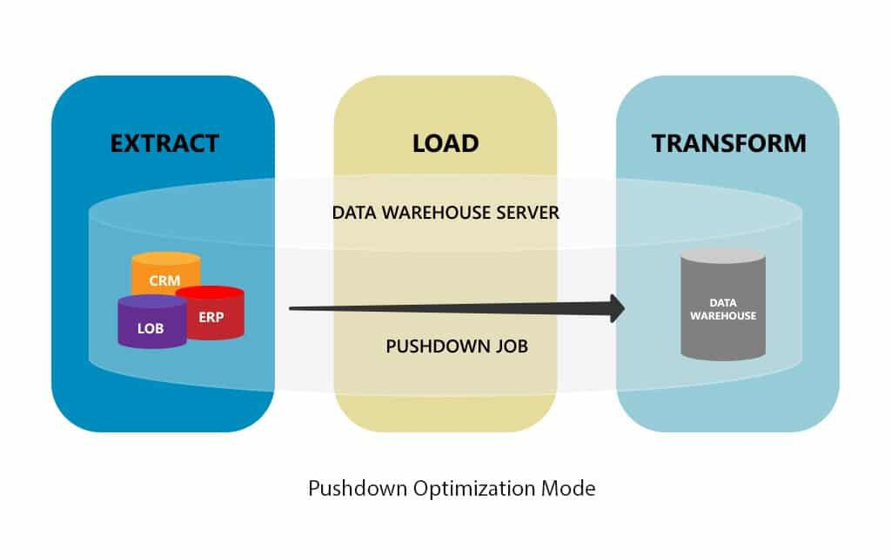
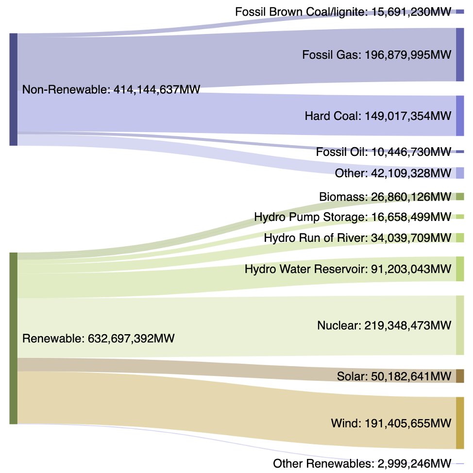
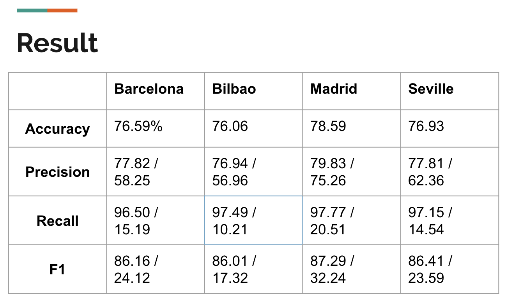

Many industrial companies and regional Utilities are using Big Data tools (such as Historical Data Archives) to record and analyze equipment data. This is being done in an effort to optimize production, reduce maintenance time, cut unnecessary costs, and identify safety/pollution risks.
Hourly energy demand generation and weather Dataset , Datasets obtained from kaggle. Both dataset is in csv format, one describe the weather of five largest cities in spain, the other provide the energy generation and consumption of spain;
the energy dataset was retrieved from ENTSOE public portal and the weather data was from "The Open Weather API".

The table has been process with these steps
Project Specific Preprocessing steps
#Create City
Valencia_df=weather_df.loc[weather_df["city_name"]=="Valencia"]
Madrid_df=weather_df.loc[weather_df["city_name"]=="Madrid"]
Barcelona_df=weather_df.loc[weather_df["city_name"]==' Barcelona']
Seville_df=weather_df.loc[weather_df["city_name"]=='Seville']
Bilbao_df=weather_df.loc[weather_df["city_name"]=="Bilbao"]
Madrid_Prep_df = Madrid_df.drop(["city_name", "weather_main", "weather_description", "weather_icon"], 1)
# Prep Energy Table for Merge
energy_clean_df = energy_clean_df.rename(columns={"time": "dt_iso"})
energy_forecast_df = energy_clean_df[[
"dt_iso",
"forecast solar day ahead",
"forecast wind onshore day ahead",
"total load forecast",
"price day ahead",
"excessive waste"]].copy()
#check column function
def check_column(df, df_name):
print("\n" + df_name + " Column Null Values")
for column in df.columns:
print ([column, df[column].isnull().sum()])
print("\n")
Visualization of Temperature[2018] and the Energy Generation
The Multiple line chart provide the information of average temperature of each month in 2018
The average temperature is lower in Bilbao compares to other four cities
Using Multiple line plots to generate a figure with Energy generation through biomass and waste energy generation
The Biomass energy generation has significantly drop after April of 2016. This provide some information about either policy change or demand change from spain
SVM-RBF(Radial Bias Function) model was use beacues of its has the highest matrics among the other models that we tested.
Creating a hyperplane between the types. RBF is the type of hyperplane kernal used. Unlike Linear or Poly, RBF can be multiple individual areas Confusion Matrix: Accurate models would want values to be high in the True/True & False/False sections.
The dataset from one city(Madrid) was split into train & test sets. After selecting the SVM model, Madrid was used to train the model, and the other cities were used as the test set. Finally, Madrid was tested against itself

Our model had some minor success in identifying situations where an excessive amount of energy is wasted. At very high percentages, it identified non-wasted situations correctly. However, it only picked up the wasted energy generation situations at rates of 10 - 20%. This is of some benefit, as the model is "safe". If it didn't have a high recall number for non-wasted energy situations, this model would not be used, as energy MUST be supplied adequately. Even with the low scores of the wasted energy identification, this model may be able to reduce high/cost equipment rates by 10% The model also was less accurate when used for Bilbao.
